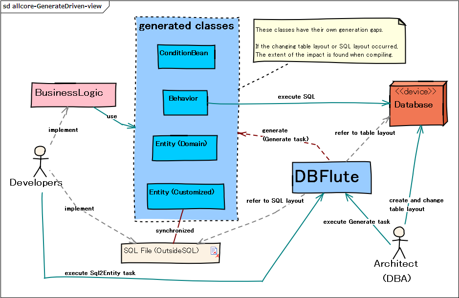

読むだけDBFlute
DBFluteのコードを読むだけの人のためのチュートリアルです。 JavaやSQLはある程度わかることを前提としています。説明のためのDBスキーマとして maihamadb を使います。
まずはじめに知ろう
DBFluteはクラスを自動生成している
DBFluteは、自動生成されたクラスがあって初めて動作するO/Rマッパです。 アプリのプログラムの中では、自動生成されたクラスがメインで登場します。
図 : 自動生成ドリブンの概念図 
{kind=link}
主な登場人物クラス
一つのテーブルに付き、以下のクラスが一つずつ自動生成されます。
- Behavior (Bhv)
- 検索や更新メソッドを持つ入り口クラス (DIコンポーネント)
- ConditionBean (CB)
- 検索条件を表現するクラス (Behaviorのメソッドの引数で使われる)
- Entity
- 一レコードを表現する入れ物クラス (検索結果や更新値などで使われる)
テーブルごとに生成されるクラス名はこのようになります。
- MEMBERテーブル
- MemberBhv.java, MemberCB.java, Member.java
- PURCHASEテーブル
- PurchaseBhv.java, PurchaseCB.java, Purchase.java
- MEMBER_LOGINテーブル
- MemberLoginBhv.java, MemberLoginCB.java, MemberLogin.java
Behavior (Bhv)
Behaviorは、検索や更新メソッドを持つ入り口クラスとなります。
まず、Behaviorを見つけよう
ActionクラスやLogicクラスなどで、Behaviorが出てきたら基本的にそのテーブルを基点としてDBアクセスしていると考えて良いです。 なので、まずは Behavior を見つけましょう。
BehaviorはDIコンポーネントなので、インスタンスはDIで設定されますので、インスタンス変数のDI定義を見ると良いでしょう。
e.g. MEMBERテーブルのBehaviorをDI (LastaFluteの場合) @Java
public class SeaAction extends ... {
@Resource // このアノテーションはDIコンテナによって変わる
private MemberBhv memberBhv; // MEMBERテーブルのBehaviorをDI
...
}
Behaviorのメソッドに注目
Behaviorの呼び出しているメソッドに注目しましょう。
e.g. MEMBERテーブルをリスト検索: selectList() @Java
// memberBhv の selectList() を呼び出しているので、
// MEMBERテーブルに対してリスト検索をしている
// 引数の cb が検索条件を表現する ConditionBean
ListResultBean<Member> memberList = memberBhv.selectList(cb -> {
cb.setupSelect_MemberStatus();
cb.query().setMemberName_LikeSearch("S", op -> op.likePrefix());
cb.query().addOrderBy_MemberId_Asc();
});
メソッド名は、SQLの操作 (e.g. select, update) の名前に近いものになっています。
- selectXxx()
- 検索系メソッド: selectList(), selectEntity()
- insert()
- 登録系メソッド: insert(), insertOrUpdate(), batchInsert()
- update()
- 更新系メソッド: update(), updateNonstrict(), batchUpdate(), queryUpdate()
- delete()
- 削除系メソッド: delete(), deleteNonstrict(), batchDelete(), queryDelete()
- loadXxx()
- 子テーブル検索メソッド: load(), loadPurchase(), loadMemberLogin()
多少、用途によってメソッド名は変わりますが、selectという単語が入っていたらselect, updateという単語が入っていたらupdate, というように捉えても問題ありません。
子テーブルの検索だけ、特別な扱いで load... というメソッドになっています。こちらは、子テーブルに関するアプローチのところで詳しく後述します。
Behaviorの検索メソッドたち
リスト検索、一件検索、ページング検索、カーソル検索など、検索スタイル(戻り形式の違い)によってメソッドが変わります。 ただ、いずれに基本的には ConditionBean を引数に検索条件を指定します。
e.g. 会員ID "1" 番で会員を一件検索 (関連テーブルの会員ステータスも一緒に取得) @Java8
...
// _/_/_/_/_/_/_/_/_/_/_/_/_/_/_/_/_/_/
// 一緒に取得する関連テーブル : なし
// 絞り込み条件 : 会員IDが "1" 番である => 絶対に存在する
// _/_/_/_/_/_/_/_/_/_/
memberBhv.selectEntity(cb -> cb.acceptPK(1)).alwaysPresent(member -> {
Integer memberId = member.getMemberId();
String memberName = member.getMemberName();
String memberAccount = member.getMemberAccount();
LocalDate birthdate = member.getBirthdate(); // *Java TimeAPI
LocalDateTime formalizedDatetime = member.getFormalizedDatetime();
}); // なければ例外 (エラーメッセージでSQLが表示される)
...
// _/_/_/_/_/_/_/_/_/_/_/_/_/_/_/_/_/_/
// 一緒に取得する関連テーブル : なし
// 絞り込み条件 : 会員IDが "1" 番である => 存在しないかもしれない
// _/_/_/_/_/_/_/_/_/_/
memberBhv.selectEntity(cb -> cb.acceptPK(1)).ifPresent(member -> {
Integer memberId = member.getMemberId();
String memberName = member.getMemberName();
...
}).orElse(() -> {
// 存在しないときの処理をここで
});
e.g. 色々な絞り込み条件で会員をリスト検索 (関連テーブルもいろいろと) @Java8
...
// _/_/_/_/_/_/_/_/_/_/_/_/_/_/_/_/_/_/_/_/_/_/_/_/_/_/_/_/_/_/
// 一緒に取得する関連テーブル:
// o 会員ステータス => 絶対に存在する
// o 会員退会情報 => 存在しないかもしれない
// o 会員サービスと、その親テーブルのサービスランク => 絶対に存在する
// 絞り込み条件:
// o 会員名称が "S" で始まる
// o 会員ステータスが "正式会員" である (区分値メソッド)
// o 支払い済みで200円以上の購入をしたことがある会員 (one-to-many)
// ソート条件:
// o 生年月日の降順 (でも null は後ろにね)
// o 会員IDの昇順
// _/_/_/_/_/_/_/_/_/_/
ListResultBean<Member> memberList = memberBhv.selectList(cb -> {
cb.setupSelect_MemberStatus();
cb.setupSelect_MemberServiceAsOne().withServiceRank();
// LikeSearchOptionだって、Lambdaコールバック
cb.query().setMemberName_LikeSearch("S", op -> op.likePrefix());
cb.query().setMemberStatusCode_Equal_Formalized();
cb.query().existsPurchase(purchaseCB -> {
purchaseCB.query().setPurchasePrice_GreaterEqual(200);
purchaseCB.query().setPaymentCompleteFlg_Equal_True();
});
cb.query().addOrderBy_Birthdate_Desc().withNullsLast();
cb.query().addOrderBy_MemberId_Asc();
}); // そのまま回すだけなら、ここから forEach() や stream() しちゃってもOK
memberList.forEach(member -> { // でもまあ、とりあえず変数に受け取ってから回してみる
Integer memberId = member.getMemberId();
String memberName = member.getMemberName();
...
// 関連テーブルの Entity も OptionalEntity (カージナリティを見てメソッド選ぶべし)
member.getMemberStatus().alwaysPresent(status -> {
String statusName = status.getMemberStatusName();
...
});
member.getMemberWithdrawalAsOne().ifPresent(withdrawal -> {
LocalDateTime withdrawalDatetime = withdrawal.getWithdrawalDatetime();
...
});
});
メソッドの詳細やどんなメソッドがあるか？に関しては、Behaviorのページを見ると良いでしょう。
ただ、これだけ抑えておけばひとまず読めるでしょう、という代表的なメソッドを列挙します。
- selectList()
- リスト検索: List<Entity>型で受け取る
- selectEntity()
- 一件検索: 一つのEntity型で受け取る、PK検索などで利用
- selectPage()
- ページング検索: PagingResultBean<Entity>型で受け取る
- selectCursor()
- カーソル検索: コールバックで一件ずつEntityを受け取る
- load(...)
- 子テーブル検索: 検索結果に対して子テーブルの情報を付与する (詳しくは後述)
ConditionBeanについては、詳しくは後述します。
Behaviorの更新系メソッドたち
登録、更新、削除、そして、排他制御ありなし、バッチ更新、条件更新などの用途によってメソッドが変わります。 ただ、いずれに基本的には Entity を引数にレコードを指定します。
e.g. MEMBERテーブルに一件登録する @Java
Member member = new Member();
//member.setMemberId(1); // 自動採番の場合は不要
member.setMemberName("Stojkovic");
member.setMemberAccount("Pixy");
member.setMemberStatusCode_Provisional();
member.set... // null で登録する場合は設定は不要
//member.setRegisterUser(user); // 共通カラムは自動設定(設定が有効なら)
//member.setRegister...
//member.setVersionNo(versionNo); // バージョン番号は自動で初期値に
memberBhv.insert(member);
Integer memberId = member.getMemberId(); // 自動採番の場合は採番値が取得できる
メソッドの詳細やどんなメソッドがあるか？に関しては、Behaviorのページを見ると良いでしょう。
ただ、これだけ抑えておけばひとまず読めるでしょう、という代表的なメソッドを列挙します。
- insert()
- 一件登録: 一つのEntityを受け取ってinsertする
- update()
- 一件更新: 一つのEntityを受け取ってupdateする (対象テーブルなら排他制御あり)
- updateNonstrict()
- 一件更新: update()と同じだが排他制御対象テーブルでも排他制御なしで更新
- delete()
- 一件削除: 一つのEntityを受け取ってdeleteする (対象テーブルなら排他制御あり)
- deleteNonstrict()
- 一件削除: delete()と同じだが排他制御対象テーブルでも排他制御なしで削除
- batchInsert()
- バッチ登録: 複数のEntityを受け取って一気にinsertする
- queryUpdate()
- クエリ更新: EntityとConditionBeanを受け取って条件に合致の更新をする
- queryDelete()
- クエリ削除: EntityとConditionBeanを受け取って条件に合致の更新をする
ConditionBean
検索条件を表現するクラスです。
自分でnewせずコールバックで指定
ConditionBeanは、Behaviorの引数で指定されますが、自分でインスタンスをnewするのではなく、Lambdaのコールバック引数としてフレームワークから提供されます。
e.g. MEMBERテーブルをリスト検索するのに、ConditionBeanを指定 @Java
ListResultBean<Member> memberList = memberBhv.selectList(cb -> {
cb.setupSelect_MemberStatus();
cb.query().setMemberName_LikeSearch("S", op -> op.likePrefix());
cb.query().addOrderBy_MemberId_Asc();
});
cb とか memberCB とか見かけたら、それが ConditionBean です。cb というシンプルな名前の場合は、そのBehaviorが基点としてテーブルのConditionBeanだと考えて良いです。
CBの三つの代表的な操作
まず、以下の三つの代表的な操作を知りましょう。
- cb.setupSelect_...()
- データ取得: 関連テーブルのカラムをselect句に並べる
- cb.query().set...
- 絞り込み: where句での絞り込み条件を指定
- cb.query().addOrderBy_...()
- 並び替え: order by句でのソート条件を指定
e.g. ConditionBeanの基本の検索 @Java
ListResultBean<Member> memberList = memberBhv.selectList(cb -> {
// _/_/_/_/_/_/_/_/_/_/_/_/_/_/_/_/_/_/_/_/_/_/_/_/_/_/
// データ取得: select句 (+ join句)
// _/_/_/_/_/_/_/_/_/_/
// MEMBER_STATUSをselect句に並べて、Java上でデータを扱う
cb.setupSelect_MemberStatus();
// _/_/_/_/_/_/_/_/_/_/_/_/_/_/_/_/_/_/_/_/_/_/_/_/_/_/
// 絞り込み: where句 (+ join句)
// _/_/_/_/_/_/_/_/_/_/
// MEMBER_NAMEの前方一致の絞り込み
cb.query().setMemberName_LikeSearch("S", op -> op.likePrefix());
cb.query().queryMemberServiceAsOne() // MEMBER_SERVICEのポイント数が100以上
.setServicePointCount_GreaterEqual(100);
// _/_/_/_/_/_/_/_/_/_/_/_/_/_/_/_/_/_/_/_/_/_/_/_/_/_/
// 絞り込み: order by句 (+ join句)
// _/_/_/_/_/_/_/_/_/_/
// MEMBER_STATUSの表示順の昇順、そして、MEMBER_IDの昇順
cb.query().queryMemberStatus().addOrderBy_DisplayOrder_Asc();
cb.query().addOrderBy_MemberId_Asc();
});
- 基点テーブルのカラムはデフォルトでselect句に列挙されます
- cb.query() は、絞り込み条件、ソート条件の目印と考えてOKです
ConditionBeanはFKを知っている
ConditionBeanの最大の特徴として、RDB上のFK (リレーションシップ) の情報を使っていることです。 どのテーブルが、どのテーブルを、どのカラムで参照しているか？これらを知っています。
リレーションシップのないテーブルは指定できない
まず、リレーションシップになっているテーブルのみメソッドとして選ぶことができます。 逆に言うと、全くつながりのないテーブル同士を絡めた検索をすることはできません。
e.g. MEMBERからPRODUCT_STATUSをいきなり指定はできない @Java
ListResultBean<Member> memberList = memberBhv.selectList(cb -> {
// これはコンパイルエラー、リレーションシップのないテーブルは指定できない
cb.setupSelect_ProductStatus();
});
例えば、MEMBERテーブルからいきなりPRODUCT_STATUSテーブルを指定することはできません。 そもそもそういったメソッドが自動生成されません。
明示的にjoin句を指定することはない
また、リレーションシップの操作をするとき、明示的にjoin句を指定することはありません。
例えば、setupSelectでselect句に関連テーブルのカラムを並べるのであれば、自然とその関連テーブルのjoinは必要です。 同様に、query()でwhere句で関連テーブルのカラムを利用するのであれば、自然とjoinは必要です。 ゆえに、わざわざアプリケーションでjoinを指示しなくてもConditionBeanがjoin句を構築してくれます。 また、ConditionBeanは何のカラムでつなげれば良いのか知っているので、結合条件の指定も不要です。
e.g. 目的 (select句、where句) を指示すれば、手段 (join句) は自動で解決される @Java
ListResultBean<Member> memberList = memberBhv.selectList(cb -> {
// MEMBER_STATUSをデータ取得したい(select句に並べたい)のであれば、
// joinは自然と必要なのでわざわざ指定する必要はない (joinだけ指定するメソッドはない)
cb.setupSelect_MemberStatus();
// MEMBER_SERVICEを絞り込みで使いたい(where句で使いたい)のであれば、
// joinは自然と必要なのでわざわざ指定する必要はない (joinだけ指定するメソッドはない)
cb.query().queryMemberServiceAsOne()
.setServicePointCount_GreaterEqual(100);
});
ConditionBeanは、SQLから比べて一つ目的レベルが上がったAPIだと言えます。どんなデータが欲しいのか？どんな絞り込みをしたいのか？ を純粋に指定してもらって、そのために発行するSQLはConditionBeanが持っている情報をフル活用して構築するというものです。
ConditionBeanの情報ページ
ConditionBeanでどんな条件を指定できるのか？それぞれのメソッドの詳細は？については、ConditionBeanのページを見ると良いです。
- トップページ
- ConditionBean *ここがすべて
- ひとめで
- ひとめでConditionBean *お手軽リファレンス
ある程度、ConditionBeanのコツを掴めてパッと見ればわかるような人であれば、"ひとめでConditionBean" のページでサクッと探すと良いでしょう。
子テーブルのアプローチ (one-to-many)
子テーブルは、その特性上SQLでの扱いも難しいため、DBFluteでも特別な扱いになっています。
子テーブルに対する三つの機能
- LoadReferrer
- データ取得: 子テーブルのカラムデータを取得する
- ExistsReferrer
- 絞り込み: 子テーブルのカラムで基点テーブルを絞り込む
- DerivedReferrer
- 導出カラム: 子テーブルの導出カラムを取得したり絞り込んだり
外だしSQL (OutsideSql)
さて、DBFluteは、ConditionBeanだけじゃなくて、ベタにSQLを書いてDBアクセスする手段も持ち合わせています。 タイプセーフな実装と組み合わせて適材適所で使い分けるのがオススメの方法となっています。ゆえに、時々外だしSQLで検索されているコードも見かけることがあると思います。
外だしSQLの情報ページ
- トップページ
- 外だしSQL(OutsideSql) *2Way-SQL
- 使い方
- 外だしSQLの使い方 *とにかく実装したいなら
- 外だしで使うタスク
- Sql2Entityタスク *SQL対応Entityの自動生成
外だしSQLの実装の流れ
- 外だしSQLを パラメータコメント を使って 2Way-SQL で書く
- Sql2Entity を実行して CustomizeEntity と ParameterBean を自動生成
- Behaviorの outsideSql() メソッドから実行
外だしSQLの実装Example (2Way-SQL)
e.g. 2Way-SQLでの実装 (CustomizeEntity と ParameterBean を利用) @OutsideSql
/*
[df:title]
単なるシンプルな会員検索
[df:description]
これはDBFluteドキュメント上のExampleであり、
正直、このくらいなら ConditionBean で実装してしまうだろう。
*/
-- #df:entity#
-- !df:pmb!
-- !!AutoDetect!!
select mb.MEMBER_ID
, mb.MEMBER_NAME
, stat.MEMBER_STATUS_NAME
from MEMBER mb
left outer join MEMBER_STATUS stat
on mb.MEMBER_STATUS_CODE = stat.MEMBER_STATUS_CODE
/*BEGIN*/
where
/*IF pmb.memberId != null*/
mb.MEMBER_ID = /*pmb.memberId*/3
/*END*/
/*IF pmb.memberName != null*/
and mb.MEMBER_NAME like /*pmb.memberName*/'M%'
/*END*/
/*END*/
order by mb.BIRTHDATE desc, mb.MEMBER_ID asc
- #df:entity#
- SQL対応のEntityを自動生成するというマーク
- !df:pmb!
- SQLに渡すパラメーターを詰めるBeanを自動生成するというマーク
- !!AutoDetect!! SQLに渡すパラメーターのプロパティを自動判別するというマーク
外だしSQLの呼び出し (Javaから)
e.g. リスト検索 (TypedParameterBean) {名前が 'S' で始まる会員を検索｝@Java
SimpleMemberPmb pmb = new SimpleMemberPmb();
pmb.setMemberName_PrefixSearch("S");
// 外だしSQLの実行 (MemberBhv_selectSimpleMember.sql)
List<SimpleMember> memberList
= memberBhv.outsideSql().selectList(pmb);